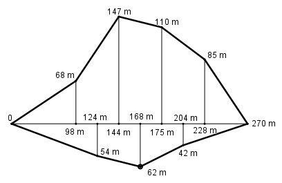

Aufgabe 158 Ein landwirtschaftlicher Betrieb bietet Ackerflächen an.Wie groß ist die Gesamtfläche A?

Oben von links: 98m * 68 m Dreieck1 = -------------- = 3 332 m2 2 68 m + 147 m Trapez1 = --------------- * (144 – 98)m = 4 945 m2 2 147 m + 110 m Trapez2 = --------------- * (175 – 144) m = 2 = 3 983,5 m2 110 m + 85 m Trapez3 = -------------- * (228 – 175) m = 2 = 5 167,5 m2 85m * (270 – 228) m Dreieck2 = ---------------------- = 1 785 m2 2 Unten von links: 54 m * 124 m Dreieck3 = --------------- = 3 348 m2 2 54 m + 62 m Trapez4 = ------------- * (168 – 124) m = 2 552 m2 2 62 m + 42 m Trapez5 = ------------- * (204 – 168) m = 1 872 m2 2 42 * (270 – 204) m Dreieck4 = -------------------- = 1 386 m2 2 A = 3332 m2 + 4945 m2 + 3983,5 m2 + 5167,5 m2 + + 1785 m2 + 3348 m2 + 2552 m2 + 1872 m2 + 1386 m2 = 28 371 m2 A = 283,71 a